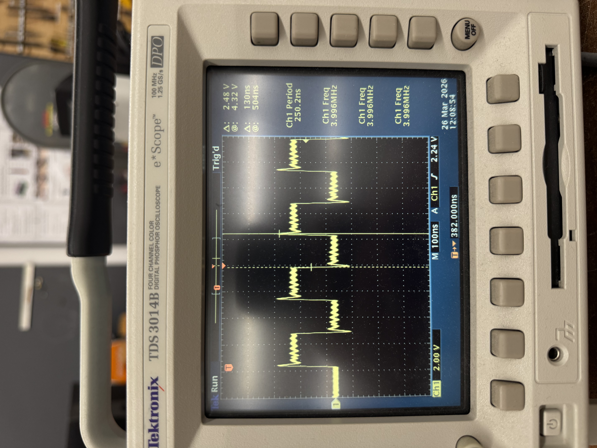

The MVP Concept
For this week, I decided to try to make a first-iteration attempt at both creating the enclosure holding my nail polish as well as integrating the load sensors with my RFID database system. My "case" has load sensors placed in a false bottom, with the polish situated above them. In the polish section, I made high walls, measuring the max height of the polish I had and using that as my height. My plan was to have polish sitting on the sensor. When being used, they would be scanned by the RFID scanner, and scanned again when placed back in the enclosure.
Physical Enclosure
For the most part, the enclosure turned out the way I expected. I didn't make the case to store the drawer, but the drawer itself was assembled as expected. I had to make some alignment measurements using cardboard as well as redo some parts, but the drawer was able to hold polish. In the future, I might tweak the design to lower the walls since it was hard to grab the polish from the drawer.
I also had some difficulty both balancing the drawer and getting consistent readings from the load sensors, so I added a 3D printed base. However, the readings were still somewhat inconsistent. I might change the enclosure to tweak how the sensors interact with the drawer, since that might be affecting consistency. I might also try to find higher-precision sensors, since the change in weight would be fairly small.

Circuitry
I ended up hooking up two load sensors, an RFID scanner, and an LED to my Xiao for this MVP. Right now, the LED acts as a visual indicator that a tag was scanned, mostly for debugging purposes. However, I plan to add more cues, like another LED or a speaker to indicate various things such as a successful or failed RFID scan and when a new weight is registered to the system database.


Code
As for my code, I tried to implement multiple class systems including LED, RFID, load sensor, and command system that all worked together to update my database. The however, database is relatively small (for testing purposes) and there are certain functions that aren't implemented yet, like adding new entries into the database. However, we can tare, recalibrate, and check in/out polishes. Whenever an action is performed, the serial monitor spits out feedback for the user. In the future, I plan to integrate this output with more visual circuit outputs.
I think I might collapse some of my logic in the future, though. While it was easier to implement a separate calibration class, the code would be cleaner if I combined it with my scale sensor class. I also plan to do general cleanup of my code. Right now, it's a mixing pot of a lot of different code I've found while looking into my different inputs. Ideally, I would like to spend more time optimizing it for my project.

Oscilloscope
Using the oscilloscope, the period of this square sine wave is about 250ns meaning a frequency of around 4MHz. From this, we can see that it's a fixed clock.
